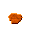
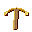
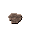
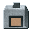
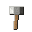
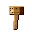

Tier 2 — Metal Ages¶
Charcoal smelting. Pull the first metal out of rock and learn the alloy that named an age.
13 quests · 12 on the win-path · 0 branches
The Metal Ages¶
The Metal Ages¶
You have fire, clay, and a kiln that reaches over 1,000 degrees. You have everything you need to work metal.
Three metals. Three ages. Each one harder to make and more useful than the last.
- Copper: hammer it cold, then learn to melt it
- Bronze: find tin, smelt it, alloy it with copper
- Iron: gather bog iron, build a bloomery, hammer out wrought iron
The Steam chapter will ask you for a lot of iron. This is where you learn to make it.
Tip · Use the recipe browser throughout this chapter. Quest tasks show what to produce but not the exact ingredients. Hover any item and press R to see its recipe, or press U to see what uses it. Every process in this chapter is discoverable that way -- you don't need to guess.
Tip · Both paths reward you equally. You must complete the Bronze path (bronze pickaxe) AND the Iron path (iron hammer) to reach the checkpoint. Both tools unlock Tier 2 ore mining -- coal, hematite, cassiterite in harder deposits. You will need them for the Steam chapter.
Background
What changes here¶
You stop finding materials and start producing them. That distinction -- found vs. produced -- is the conceptual leap behind all of metallurgy.
Cold-Hammered Copper¶
Unlocks after: The Metal Ages
Cold-hammered copper¶
Native copper doesn't need a furnace. It needs a hammerstone and patience.
Cold hammering work-hardens copper -- each strike makes it stronger, but eventually it becomes brittle. Anneal it in your campfire to restore workability, then hammer again.
This is the Copper Age. It predates smelting by thousands of years.
Do this:
- retrieve Mine native copper (already visible -- no survey needed).

yields: RN
Rewards: HC hammered copper nugget×4 RNraw native copper×10
hammered copper nugget×4 RNraw native copper×10
Background
Annealing¶
Heating metal and letting it cool slowly was discovered before smelting. Copperworkers noticed that fire softened their work-hardened pieces. This observation -- that heat changes metal -- is the conceptual leap that eventually leads to all of metallurgy.
Crucible Smelting¶
Unlocks after: Cold-Hammered Copper
Crucible smelting¶
Your kiln can reach 1,100 °C. Copper melts at 1,085 °C.
You already have everything you need.
Build a clay crucible. Load it with native copper. Fire it in the kiln. Pour the liquid copper into a stone mold.
Do this: - produce Craft clay crucibles for holding a metal charge. - produce Carve a stone ingot mold. - produce Smelt native copper in the crucible and cast copper ingots.
Rewards: CI copper ingot×4 SC
copper ingot×4 SC small clay crucible×1
small clay crucible×1
Background
This is the moment your game changes¶
You can now produce a material that is liquid and can be shaped. From here, every metal follows the same logic: heat, reduce, cast. The only variables are temperature requirements and reduction chemistry.
Copper Tools¶
Unlocks after: Crucible Smelting
Copper tools¶
Cast copper is soft but workable. Shape it into simple tools -- awls, chisels, small blades.
Copper tools wear quickly compared to stone, but they can be re-cast when they break. Stone can't.
That's the real advantage: repairability.
Do this:
- retrieve Stockpile copper ingots for toolmaking and alloying.
yields: CI copper ingot×6
copper ingot×6
Rewards: CI copper ingot×6 SIstone ingot mold×1
copper ingot×6 SIstone ingot mold×1
Background
Why copper matters¶
Copper is not better than stone for cutting. It's better than stone for remaking.
A broken flint blade is waste. A broken copper awl goes back in the crucible.
Find the Tin¶
Unlocks after: Copper Tools
Find the tin¶
Bronze isn't copper. It's copper + tin.
Tin comes from cassiterite -- a heavy, dark pebble found in stream gravels. It looks like nothing. It changes everything.
Look for dark, dense pebbles in stream deposits. Cassiterite is visible to the naked eye if you know what you're looking for.
Do this:
- retrieve Collect cassiterite ore from stream gravels.
yields: RCraw cassiterite ore×12
Rewards: RCraw cassiterite ore×8
Background
Why tin matters¶
Tin occurs in relatively few places, unlike common copper. Bronze Age "globalization" happened because of this single alloy requirement. Trade routes formed specifically to supply tin to copper-producing regions.
Smelt Tin¶
Unlocks after: Find the Tin
Smelt tin¶
Tin melts at 232 °C -- well within campfire range, far below your kiln's capacity.
Load cassiterite into a crucible with charcoal. The carbon reduces the tin oxide to metallic tin. Pour it into your stone mold.
Tin by itself is too soft for tools. But mixed with copper...
Do this: - produce Smelt cassiterite into tin ingots in the crucible.
Rewards: TI tin ingot×4
tin ingot×4
Background
The ratio¶
Bronze is approximately 90% copper, 10% tin. Too much tin makes it brittle. Too little and you haven't improved on pure copper.
Cast Bronze¶
Unlocks after: Smelt Tin
Cast bronze¶
Melt copper and tin together in a crucible. The ratio matters: roughly 5 copper to 1 tin for gameplay.
Pour into molds. Cool. You have bronze.
Bronze is harder than copper, holds an edge better, and casts more precisely. It's the first engineered material -- an alloy designed for performance.
Do this: - produce Alloy copper and tin to produce bronze ingots. - produce Forge a bronze pickaxe (unlocks Tier 2 mining).
Rewards: BI  bronze ingot×4 BP
bronze ingot×4 BP
Background
What bronze unlocks¶
The bronze pickaxe unlocks Tier 2 ore mining -- hematite, magnetite, and sulfide ores that stone and copper tools can't touch.
You now have a reason to go deeper.
Bog Iron¶
Unlocks after: Copper Tools
Bog iron¶
Bog iron forms in wetland areas where iron-bearing groundwater meets organic acids.
It's impure, spongy, and weak compared to later iron. But it's everywhere. A village smith can collect it without mining equipment.
Look for orange-brown precipitate at the margins of standing water. Bog iron is auto-surveyed -- you can see it without a geology hammer.
Do this:
- retrieve Gather bog iron from wetland deposits.

yields: RB
Rewards: RBraw bog iron×20
Background
Why iron matters¶
Iron broke the palace monopolies on metallurgy that bronze had created. Before bog iron, having metal tools required either living near a mine or being part of a trade network. After bog iron, any community with a wetland could make iron.
Roasting Pit¶
Unlocks after: Bog Iron
Roasting pit¶
Raw bog iron is full of moisture and volatile impurities. Roasting drives these off before the bloomery step.
Build a simple roasting pit -- a shallow fire bed with ore layered on top. The heat doesn't melt anything. It just dries and pre-treats the ore so the bloomery can reduce it more efficiently.
Do this:
- retrieve Build and place a roasting pit.

yields: OR
Rewards: RB roasted bog iron×6
roasted bog iron×6
Background
Not optional¶
Without roasting, your bloomery will consume more charcoal and produce a smaller, slag-heavy bloom. Roasting is where "I found some ore" becomes "I prepared a charge."
Build a Bloomery¶
Unlocks after: Roasting Pit
Build a bloomery¶
A bloomery is a shaft furnace -- not a kiln.
The key difference: you force air through the base using bellows. This gets the temperature high enough to reduce iron oxide to metallic iron, even though it's not hot enough to melt iron.
Build the shaft from clay and stone. Add a tuyere (air inlet). Connect bellows. Prepare charcoal.
Do this:
- retrieve Build and place a clay bloomery furnace.
yields: CBclay bloomery furnace×1
- retrieve Have bellows ready for forced air.
yields: BE bellows×1
- retrieve Stock charcoal for the bloomery charge.
bellows×1
- retrieve Stock charcoal for the bloomery charge.
yields: CH charcoal×20
charcoal×20
Rewards: CH charcoal×20
charcoal×20
Background
What the bloomery does¶
Carbon monoxide from burning charcoal strips oxygen from the iron ore. The iron collects as a spongy mass called a bloom. It never melts. It just... consolidates.
Extract the Bloom¶
Unlocks after: Build a Bloomery
Extract the bloom¶
Charge the bloomery: roasted ore and charcoal in alternating layers. Work the bellows. The reduction reaction takes time.
The result is a spongy mass of iron and slag -- a bloom. It is NOT liquid iron. It never melts. It just consolidates.
Pull the bloom out while it's still red-hot. Work fast.
Do this: - produce Run the bloomery and extract iron blooms.
Rewards: IB iron bloom×2
iron bloom×2
Background
The bloom isn't finished iron¶
It's iron contaminated with slag. The hammering is what removes the slag and aligns the iron grain structure. Without hammering, the bloom is useless.
Forge Wrought Iron¶
Unlocks after: Extract the Bloom
Forge wrought iron¶
The bloom needs to be worked.
Reheat it to orange-red. Strike it with a heavy hammer. The slag squirts out as sparks and scale. Fold it. Reheat. Repeat.
This process is called consolidation. What you're making is wrought iron -- the same material every pre-industrial metalwork is built from.
Do this:
- retrieve Build and place a forge hearth.
yields: FHforge hearth×1
- produce Hammer blooms into wrought iron bars at the forge.
- produce Forge an iron hammer head and haft it.
Rewards: WI  wrought iron bar×4 IH
wrought iron bar×4 IH
Background
The payoff¶
The iron hammer unlocks Tier 2 mining alongside the bronze pickaxe. Both the Bronze and Iron paths open the same deeper ores -- historically accurate, and it gives you two routes to the Steam chapter.
The Metal Ages Complete¶
Unlocks after: Cast Bronze, Forge Wrought Iron
The Metal Ages complete¶
Both paths required. Bronze AND iron. Check your quest map -- one of them isn't done.
You now understand metal.
Not as a found object -- as a produced material.
Copper from native deposits. Bronze from two ores combined in a specific ratio. Iron from a reduction furnace that took all day to run. Each one is harder to make and more useful than the last.
The Steam chapter is going to ask you for a lot of iron. You know how to make it.
Rewards: PP 
Background
What you've learned¶
- Metal can be shaped by hammering, melting, or both
- Alloying (bronze) creates materials better than either component
- Reduction (bloomery) extracts metal from ore using carbon chemistry
- Every metal process is: ore + heat + chemistry = metal + waste
The Steam tier builds on all of this.